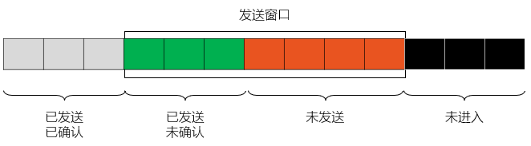
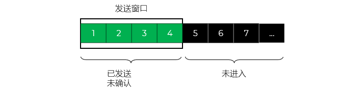
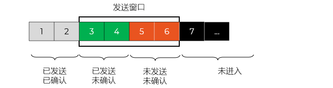
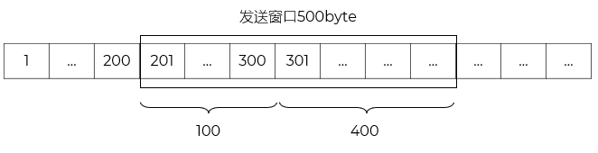
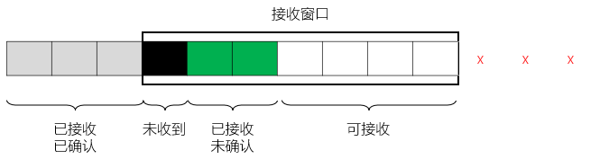

发送了 300 Bytes，对方确认了 200 Bytes
还有 100 Bytes 没有确认
确认过的数据报被移出缓存，窗口仅仅保留没有确认的数据报
窗口还有 100 Bytes 等待确认
窗口大小是 500 Bytes，所以还可以发送 500 - 100 = 400 Bytes

已接收但尚未按序（乱序到达）的数据，被 TCP 缓存在接收缓冲区中，但不能被确认 - 累积确认，只能确认到连续的最高序号
尚未收到但预期会收到的数据 - 空闲

接收≠确认
5是接收方希望接收的分组；说明：发送方发送了0、1、2、3、4分组；接收方已经收到了0、1、2、3、4分组；但是接收方对应的确认可能还没有达到发送方
发送方的发送窗口是3。保留的分组可能是
[2、3、4]：5都没有发送，因为2、3、4还没有被确认
[3、4、5]：5发送了，但是3、4、5都没有被确认
[4、5、6]：5、6发送了，但是4、5、6都没有被确认
[5、6、7]：5、6、7发送了，但是5、6、7都没有被确认
接收方发出的在途确认分组可能是：2、3、4；接收方还没有收到5，自然不能发送对5的确认